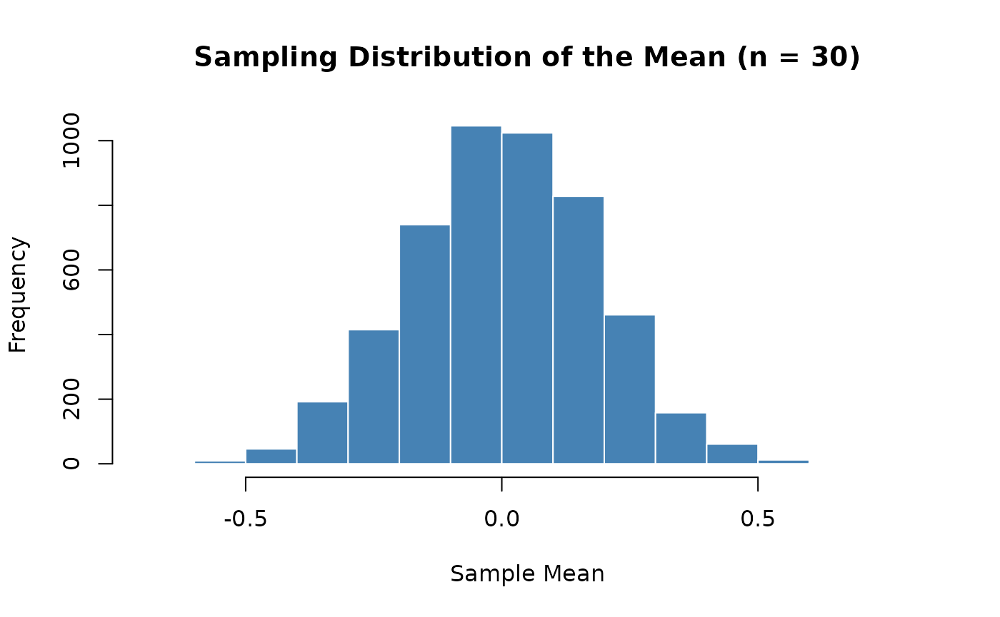
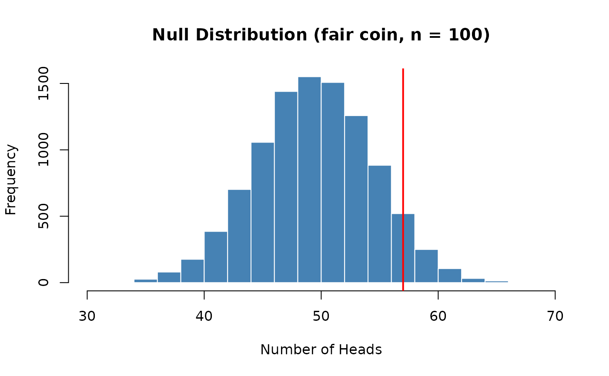
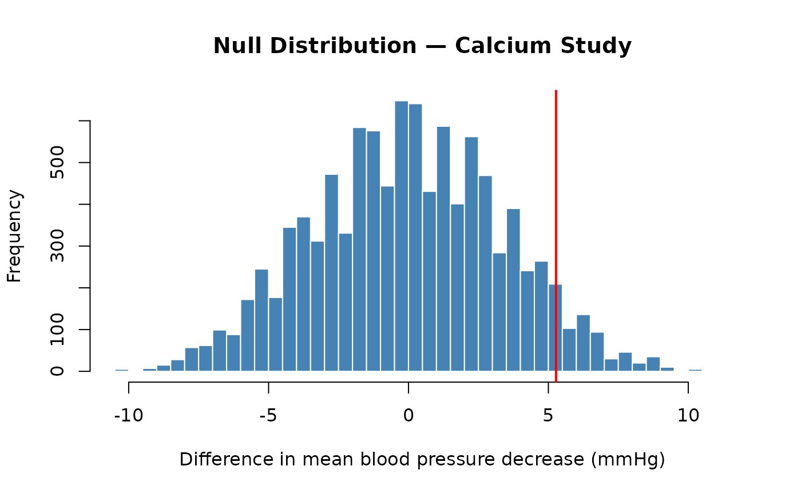
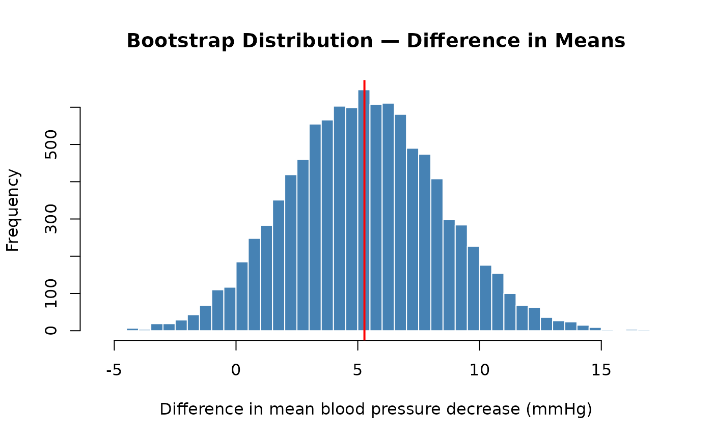

Transitioning from SDS1000 to Base R
transitioning-to-base-r.RmdOverview
The SDS1000 package was designed to make it easier to learn the core ideas of statistics in R. Now that you have finished S&DS 1000, you are ready to analyze data using standard R tools that are available to every R user — no special package required.
This guide walks through the SDS1000 functions you used most often and shows you the equivalent base R code. In most cases the base R version is only slightly more verbose, and understanding it will make you a more capable and independent programmer.
Repeating a process: do_it() →
replicate()
What do_it() does
In S&DS 1000, you used do_it(n) to repeat a block of
code n times and collect the results into a vector. For
example, to build a sampling distribution of the
proportion of red sprinkles from samples of size 100:
# SDS1000 version
sampling_distribution <- do_it(10000) * {
get_proportion(rsprinkles(100), "red")
}You also used it to build a bootstrap distribution:
# SDS1000 version
bootstrap_dist <- do_it(10000) * {
mean(sample(price_sample, length(price_sample), replace = TRUE))
}And to build a null distribution by shuffling:
The base R equivalent: replicate()
The base R function replicate(n, expr) does exactly the
same thing: it evaluates the expression expr a total of
n times and returns the results as a vector.
The pattern is:
results <- replicate(n, {
# your code here — the result of the last line is collected
})Here are the same three examples rewritten with
replicate():
Sampling distribution:
# Base R version
sampling_distribution <- replicate(10000, {
get_proportion(rsprinkles(100), "red")
})Bootstrap distribution:
# Base R version
bootstrap_dist <- replicate(10000, {
mean(sample(price_sample, length(price_sample), replace = TRUE))
})Null distribution (shuffling):
# Base R version
null_distribution <- replicate(10000, {
cor(sample(draft_numbers), birth_months) # sample() with no replace argument shuffles
})Note: in the null distribution example, shuffle() from
SDS1000 is replaced by sample() with no additional
arguments. Calling sample(x) on a vector x
returns a random permutation of its elements — which is exactly what a
shuffle does.
The for loop alternative
You can also use a for loop, which is more explicit and
easier to read when you are first learning:
# Base R version using a for loop
n_repetitions <- 10000
sampling_distribution <- numeric(n_repetitions) # create an empty vector to fill
for (i in 1:n_repetitions) {
sampling_distribution[i] <- get_proportion(rsprinkles(100), "red")
}The steps are:
- Decide how many times to repeat (
n_repetitions). - Create an empty vector of that length with
numeric()to store results. - Loop from
1ton_repetitions, computing a result each time and storing it in positioniof the vector.
The replicate() approach is more concise; the
for loop makes the mechanics more transparent. Both produce
identical results.
A working example
Here is a complete, self-contained example you can run right now. It builds a sampling distribution of the mean of 30 random normal values, entirely in base R:
set.seed(1783)
sampling_dist <- replicate(5000, {
mean(rnorm(30, mean = 0, sd = 1))
})
hist(sampling_dist,
main = "Sampling Distribution of the Mean (n = 30)",
xlab = "Sample Mean",
col = "steelblue",
border = "white")
The histogram shows the familiar bell-shaped sampling distribution —
the same result you would get using do_it(5000) in
SDS1000.
Calculating a proportion: get_proportion() →
mean() or table()
What get_proportion() does
get_proportion(v, category_name) takes a vector of
categorical data and returns the proportion of elements that belong to a
named category. For example, after taking a sample of sprinkles you
might write:
# SDS1000 version
one_sample <- get_sprinkle_sample(100)
p_hat <- get_proportion(one_sample, "red")Base R approach 1: mean() with a logical comparison
(recommended)
The most concise base R approach uses the fact that TRUE
and FALSE are stored as 1 and 0
in R, so mean() on a logical vector gives the proportion of
TRUE values:
# Base R version
p_hat <- mean(one_sample == "red")Reading this out loud: “the mean of the cases where the sample
equals "red"” — which is exactly the proportion of red
sprinkles. This works for any category and any vector of data:
# Proportion of "yes" responses in a survey vector
p_yes <- mean(survey_responses == "yes")Base R approach 2: table() and
prop.table()
Under the hood, get_proportion() calls
prop.table(table(v))[category_name]. You can use these
functions directly, which has the added benefit of showing you the
proportions for all categories at once:
# Look at counts for each category
one_sample <- rsprinkles(100)
table(one_sample)## one_sample
## green orange pink red white yellow
## 11 13 11 16 29 20
# Convert counts to proportions
prop.table(table(one_sample))## one_sample
## green orange pink red white yellow
## 0.11 0.13 0.11 0.16 0.29 0.20To extract a single category’s proportion — equivalent to
get_proportion():
# Extract just the "red" proportion
prop.table(table(one_sample))["red"]Which approach to use?
| Situation | Recommended approach |
|---|---|
| You need one category’s proportion | mean(v == "category") |
| You want to see all categories at once | prop.table(table(v)) |
| You want raw counts | table(v) |
The mean(v == "category") form is especially useful
inside replicate(), since it fits naturally on one
line:
# Base R: build a sampling distribution of the proportion of red sprinkles
sampling_distribution <- replicate(10000, {
mean(get_sprinkle_sample(100) == "red")
})Computing a p-value: ptail() → mean() with
a logical comparison
What ptail() does
After building a null distribution (typically with
do_it() / replicate()), the last step of a
hypothesis test is to compute a p-value: the proportion of values in the
null distribution that are as extreme or more extreme than the
observed statistic. In S&DS 1000, you used ptail() for
this:
ptail(obs_value, x, lower.tail = TRUE)-
obs_value— the observed statistic from your real data -
x— the null distribution (a vector of simulated statistics) -
lower.tail— ifTRUE(the default), counts values ≤obs_value(left-tail p-value); ifFALSE, counts values ≥obs_value(right-tail p-value)
For example, to test whether Paul the Octopus was psychic (observed: 11 correct predictions out of 12), you would have built a null distribution of coin-flip counts and then computed:
# SDS1000 version — upper-tail p-value
p_value <- ptail(paul_stat, null_distribution, lower.tail = FALSE)And for the 1969 draft lottery (testing whether draft numbers were correlated with birth date), you would have used:
# SDS1000 version — lower-tail p-value (observed correlation was negative)
p_value <- ptail(obs_correlation, null_distribution, lower.tail = TRUE)The base R equivalent: mean() with a logical
comparison
ptail() is, under the hood, just
sum(x >= obs_value) / length(x) (upper tail) or
sum(x <= obs_value) / length(x) (lower tail). In base R,
the mean() trick from the previous section applies here too
— taking the mean() of a logical vector gives the
proportion of TRUE values:
# Upper-tail p-value: proportion of null dist >= observed statistic
p_value <- mean(null_distribution >= obs_stat)
# Lower-tail p-value: proportion of null dist <= observed statistic
p_value <- mean(null_distribution <= obs_stat)That’s it. The two approaches are exactly equivalent.
A worked example
Here is a complete hypothesis test in base R, with no SDS1000 functions. We test whether a coin is fair given that we observed 57 heads out of 100 flips:
set.seed(4021)
# Observed statistic
obs_heads <- 57
# Build a null distribution: how many heads would we expect if the coin were fair?
null_distribution <- replicate(10000, {
sum(sample(c("heads", "tails"), 100, replace = TRUE) == "heads")
})
# Visualise the null distribution and mark the observed statistic
hist(null_distribution,
main = "Null Distribution (fair coin, n = 100)",
xlab = "Number of Heads",
col = "steelblue", border = "white")
abline(v = obs_heads, col = "red", lwd = 2)
# Compute the upper-tail p-value
p_value <- mean(null_distribution >= obs_heads)
p_value## [1] 0.0923Permutation tests and bootstrapping: shuffle() and
resample_pairs()
These two functions are the building blocks of simulation-based
inference. shuffle() powers permutation
(randomization) tests, while resample_pairs()
powers bootstrap confidence intervals when two paired
variables are involved.
shuffle() → sample()
shuffle(v) returns the elements of v in a
random order — a random permutation. It is a direct, one-to-one wrapper
around base R’s sample():
# These two lines do exactly the same thing
shuffle(v)
sample(v) # sample() with no extra arguments returns a random permutationWhen to use it: In a permutation test you shuffle one variable to break its relationship with another, then recompute a statistic. This simulates the null hypothesis that the two variables are unrelated. For example, to test whether draft numbers were correlated with birth date, one point in the null distribution would be:
# SDS1000 version
cor(shuffle(draft_numbers), birth_months)
# Base R version — identical result
cor(sample(draft_numbers), birth_months)The full permutation test in base R:
set.seed(8812)
# Simulate: are two random variables correlated?
n <- 100
x <- rnorm(n)
y <- 0.3 * x + rnorm(n) # y is weakly correlated with x
obs_stat <- cor(x, y)
# Build the null distribution by shuffling x
null_distribution <- replicate(10000, {
cor(sample(x), y)
})
# P-value: proportion of null correlations as extreme or more extreme
# (two-sided: abs handles both directions at once)
p_value <- mean(abs(null_distribution) >= abs(obs_stat))
hist(null_distribution,
main = "Null Distribution of Correlation",
xlab = "Correlation", col = "steelblue", border = "white")
abline(v = obs_stat, col = "red", lwd = 2)
p_value## [1] 8e-04
resample_pairs() → sample() with
replace = TRUE
resample_pairs(vector1, vector2) draws a bootstrap
resample from two paired vectors, keeping each pair together. For
example, if vector1[5] is a cigarette count and
vector2[5] is the cancer rate for the same state, they must
be resampled as a unit so their pairing is preserved.
Under the hood, the function:
- Draws a random set of indices with replacement
(
sample(1:n, replace = TRUE)) - Uses those same indices to subset both vectors
- Returns a data frame with columns named
vector1andvector2
In base R you do the same thing by generating the indices yourself:
# SDS1000 version
resampled_data <- resample_pairs(cigs_per_capita, cancer_rate)
resampled_cigs <- resampled_data$vector1
resampled_cancer <- resampled_data$vector2
# Base R version
n <- length(cigs_per_capita)
boot_inds <- sample(n, replace = TRUE) # same indices for both
resampled_cigs <- cigs_per_capita[boot_inds]
resampled_cancer <- cancer_rate[boot_inds]When to use it: Bootstrap confidence intervals for statistics that depend on two paired variables, such as a regression slope or a correlation. Here is a complete bootstrap for a regression slope in base R:
set.seed(3047)
# Simulate paired data (cigarettes ~ cancer)
cigs_per_capita <- runif(50, 10, 40)
cancer_rate <- 2 + 0.8 * cigs_per_capita + rnorm(50, sd = 5)
# Observed slope
obs_slope <- coef(lm(cancer_rate ~ cigs_per_capita))[2]
# Bootstrap distribution of the slope
boot_dist <- replicate(10000, {
n <- length(cigs_per_capita)
boot_inds <- sample(n, replace = TRUE)
boot_lm <- lm(cancer_rate[boot_inds] ~ cigs_per_capita[boot_inds])
coef(boot_lm)[2]
})
hist(boot_dist,
main = "Bootstrap Distribution of Regression Slope",
xlab = "Slope", col = "steelblue", border = "white")
abline(v = obs_slope, col = "red", lwd = 2)
## 2.5% 97.5%
## 0.7284031 0.9983307Putting it all together
This section shows a complete, self-contained analysis using only base R — no SDS1000 functions anywhere. The example is drawn from the class 17 notes, which investigated whether a calcium supplement lowers blood pressure.
Study design: Lyle et al. (1987) randomly assigned men to one of two groups for 12 weeks: a treatment group (n = 10) received a calcium supplement, and a control group (n = 11) received a placebo. The outcome is the decrease in blood pressure (higher = more decrease) at the end of the study.
We will:
- Run a permutation (randomization) hypothesis test to assess whether the treatment group had a larger mean decrease in blood pressure than the control group.
- Build a bootstrap confidence interval for the true difference in means.
Step 1: Enter the data and compute the observed statistic
# Data from the calcium study (Lyle et al., 1987) — class 17
treat <- c(7, -4, 18, 17, -3, -5, 1, 10, 11, -2)
control <- c(-1, 12, -1, -3, 3, -5, 5, 2, -11, -1, -3)
obs_stat <- mean(treat) - mean(control)
obs_stat## [1] 5.272727The observed difference in group means is about 5 mmHg in favour of the treatment group.
Step 2: Hypothesis test via permutation
Hypotheses:
- : The mean decrease in blood pressure is the same in both groups ()
- : The mean decrease is greater in the treatment group ()
Under the null hypothesis, group assignment doesn’t matter — any of the 21 observations could have ended up in either group. We simulate this by repeatedly shuffling the combined data and re-splitting it into groups of the same sizes.
| SDS1000 function used | Base R equivalent |
|---|---|
do_it(10000) * { ... } |
replicate(10000, { ... }) |
shuffle(combined_data) |
sample(combined_data) |
pnull(obs_stat, null_dist, lower.tail = FALSE) |
mean(null_dist >= obs_stat) |
set.seed(6174)
combined_data <- c(treat, control)
# Build the null distribution by permutation
null_dist <- replicate(10000, {
shuff <- sample(combined_data) # was: shuffle(combined_data)
shuff_treat <- shuff[1:10]
shuff_control <- shuff[11:21]
mean(shuff_treat) - mean(shuff_control)
})
# Visualise the null distribution
hist(null_dist, breaks = 60,
main = "Null Distribution — Calcium Study",
xlab = "Difference in mean blood pressure decrease (mmHg)",
col = "steelblue", border = "white")
abline(v = obs_stat, col = "red", lwd = 2)
# Compute the p-value (upper tail)
p_value <- mean(null_dist >= obs_stat) # was: pnull(obs_stat, null_dist, lower.tail = FALSE)
p_value## [1] 0.0605The p-value is just above 0.05, so at a significance level of α = 0.05 we fail to reject the null hypothesis — the evidence for a calcium effect is suggestive but not conclusive at that threshold.
Step 3: Bootstrap confidence interval
Even when a result is not “statistically significant” at a fixed threshold, a confidence interval tells us what effect sizes are plausible. Here we build a 95% bootstrap CI for the true difference in means ().
For two independent groups, we resample each group
separately with replacement (using
sample(..., replace = TRUE)), then recompute the
difference. This is the two-sample version of what
resample_pairs() does for paired data.
| SDS1000 function used | Base R equivalent |
|---|---|
do_it(10000) * { ... } |
replicate(10000, { ... }) |
resample_pairs(v1, v2) |
idx <- sample(n, replace=TRUE) then index both |
set.seed(6174)
boot_dist <- replicate(10000, {
boot_treat <- sample(treat, length(treat), replace = TRUE)
boot_control <- sample(control, length(control), replace = TRUE)
mean(boot_treat) - mean(boot_control)
})
# Visualise the bootstrap distribution
hist(boot_dist, breaks = 60,
main = "Bootstrap Distribution — Difference in Means",
xlab = "Difference in mean blood pressure decrease (mmHg)",
col = "steelblue", border = "white")
abline(v = obs_stat, col = "red", lwd = 2)
## 2.5% 97.5%
## -0.6636364 11.5181818The 95% confidence interval includes zero, which is consistent with the hypothesis test result: we cannot rule out that there is no difference between the groups. However, the interval also extends well above zero, suggesting a meaningful effect remains plausible.
Mapping SDS1000 to base R — complete summary
| Task | SDS1000 | Base R |
|---|---|---|
| Repeat a process n times | do_it(n) * { expr } |
replicate(n, { expr }) |
| Proportion of one category | get_proportion(v, "cat") |
mean(v == "cat") |
| Randomly permute a vector | shuffle(v) |
sample(v) |
| Upper-tail p-value | ptail(obs, null, lower.tail = FALSE) |
mean(null >= obs) |
| Lower-tail p-value | ptail(obs, null, lower.tail = TRUE) |
mean(null <= obs) |
| Bootstrap resample (paired) | resample_pairs(v1, v2) |
idx <- sample(n, replace=TRUE); v1[idx]; v2[idx] |
| Bootstrap resample (independent groups) | — | sample(v, length(v), replace = TRUE) |